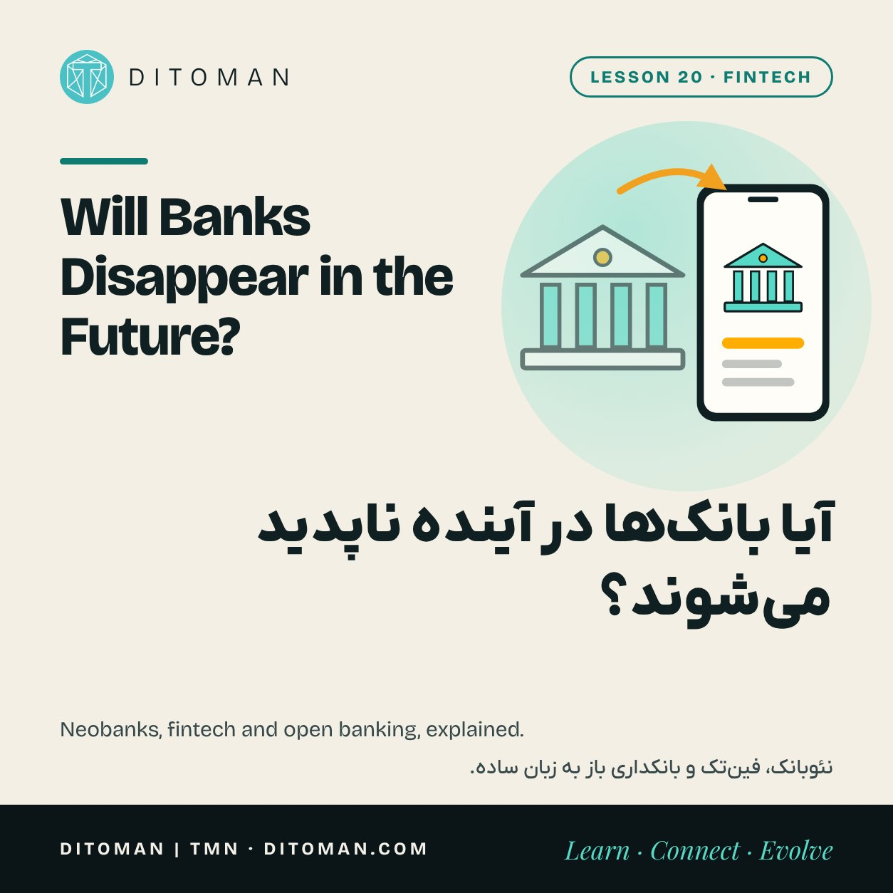
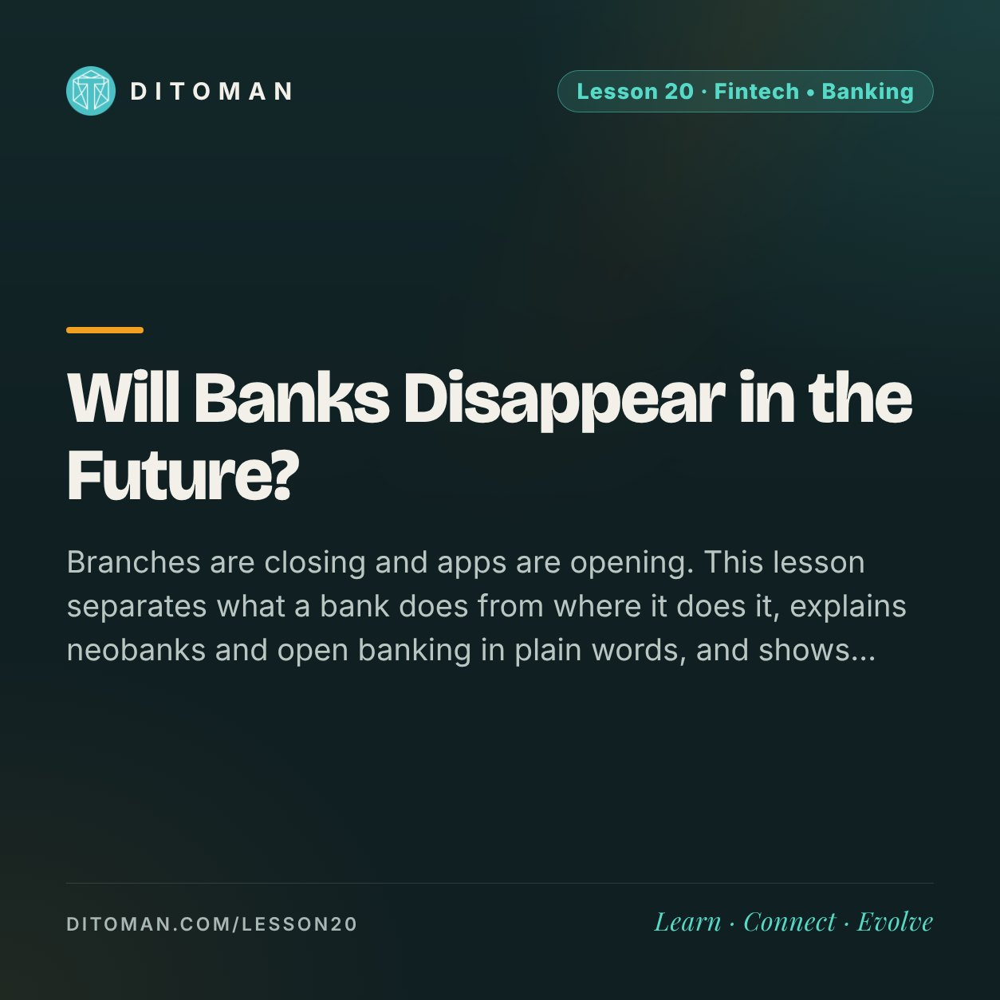

Will Banks Disappear in the Future?
آیا بانکها در آینده ناپدید میشوند؟
Branches are closing and apps are opening. This lesson separates what a bank does from where it does it, explains neobanks and open banking in plain words, and shows which jobs still need a bank behind the screen.
شعبهها بسته میشوند و اپها باز. این درس کاری را که بانک میکند از جایی که آن کار انجام میشود جدا میکند، نئوبانک و بانکداری باز را به زبان ساده توضیح میدهد و نشان میدهد کدام کارها هنوز پشت صفحه به بانک نیاز دارند.
Lesson Content
محتوای درس
Read the lesson in English or Persian.
درس را به فارسی یا انگلیسی بخوانید.
Think about the last time you stood in a bank branch. For many people it was years ago. Opening an account, sending money, paying a bill, even taking a loan now happens on a phone.
So it is fair to ask: if we no longer need the building, do we still need the bank? To answer, we need to look at what a bank actually does. It is not one job. It is four.
01. The four jobs of a bank
Keeping money safe: holding deposits and giving them back on demand.
Moving money: payments, transfers and cards, as in Lesson 14.
Lending: turning many people's short-term deposits into long-term loans for homes and businesses.
Carrying trust: holding a licence, being supervised and standing behind a deposit guarantee, as in Lesson 13.
For a century these four came in one package, from one building. Technology is now separating them, and different companies are competing for each piece.
02. What a fintech is
Fintech is short for financial technology: companies that use software to do one financial job better than before. A payment app, a lending app, an investing app and an insurance app are all fintechs.
Most fintechs do not hold a banking licence. They build the screen you touch, and behind the screen a licensed bank holds the money. You see the app. The bank is the engine underneath.
03. What a neobank is
A neobank is a bank with no branches. Everything, from identity checks to card delivery, happens through an app.
Some neobanks hold their own licence. Others are a brand built on top of a traditional bank. In Iran the well-known examples belong to this second group: Blubank works on Saman Bank, Bankino on Middle East Bank and Wepod on Pasargad Bank.
The model can grow very large. Brazil's Nubank, which was founded in 2013 and began with a single credit card, reported more than 112 million customers in January 2026 and said that made it the largest private financial institution in Brazil by number of customers.
Without branches to pay for, a neobank can charge less and move faster. The questions to ask are the same as for any bank: who holds the licence, and is my deposit covered by a guarantee?
| Traditional bank | Neobank | Fintech app | Personal crypto wallet | |
|---|---|---|---|---|
| Branches | Yes | No | No | No |
| Banking licence | Its own | Its own or a partner bank's | Usually a partner bank's | None |
| Deposit guarantee | Yes, up to a ceiling | Through the licensed bank | Depends on the partner | None |
| Who fixes a mistake | The bank | The bank, through the app | The app and its partner | Nobody |
04. What open banking is
For a long time your bank was the only company that could see your account data. Open banking changes that rule: with your permission, a bank must let another licensed company read your data or start a payment for you, through a secure connection.
The European Union made this law in 2018, and many countries have followed. It is what lets one app show accounts from several banks, or lets a lender check your income in seconds without paper statements.
The important words are "with your permission". Read what an app asks to access, and remove the permission when you stop using it.
05. Where crypto fits
Crypto goes one step further than fintech. A personal wallet moves money with no bank underneath at all, and some applications lend and trade through code alone.
That removes the middleman and, with it, the four protections a bank carries. There is no supervisor, no guarantee and nobody to reverse a mistake. Lessons 13 and 16 covered what that means in practice.
06. So, will banks disappear?
The building is fading. The jobs are not.
Someone still has to keep deposits safe, lend for twenty years and answer to a regulator when things go wrong. Those jobs are hard to do without a licence and capital, which is why even the most modern apps usually stand on a bank.
What is changing is who you deal with. The bank may become something in the background that you rarely see, like the electricity grid behind a socket. The contest of the next decade is over who owns the screen.
What to take from this
A bank does four jobs: keeping, moving, lending and carrying trust.
Fintechs take one job and do it through software, usually with a licensed bank behind them.
A neobank is a bank without branches. Ask who holds the licence and whether deposits are guaranteed.
Open banking lets other apps use your bank data, only with your permission.
Banks are becoming less visible, not less necessary.
آخرین باری را که در شعبهی بانک ایستادید به یاد بیاورید. برای خیلیها چند سال پیش بوده است. باز کردن حساب، فرستادن پول، پرداخت قبض و حتی گرفتن وام حالا روی گوشی انجام میشود.
پس پرسش بهجایی است: اگر دیگر به ساختمان نیازی نیست، به خودِ بانک هم نیازی هست؟ برای جواب باید ببینیم بانک واقعاً چه میکند. کارش یکی نیست، چهار تاست.
۰۱. چهار کار بانک
نگه داشتن پول: سپرده را نگه میدارد و هر وقت بخواهیم پس میدهد.
جابهجا کردن پول: پرداخت، انتقال و کارت؛ همان درس ۱۴.
وام دادن: سپردههای کوتاهمدت آدمهای زیاد را به وامهای بلندمدت برای خانه و کسبوکار تبدیل میکند.
حمل اعتماد: مجوز دارد، زیر نظارت است و ضمانت سپرده پشتش است؛ همان درس ۱۳.
یک قرن این چهار کار در یک بسته و از یک ساختمان عرضه میشد. حالا فناوری دارد آنها را از هم جدا میکند و شرکتهای مختلف بر سر هر تکه رقابت میکنند.
۰۲. فینتک چیست
فینتک کوتاهشدهی «فناوری مالی» است: شرکتهایی که با نرمافزار، یک کار مالی را بهتر از قبل انجام میدهند. اپ پرداخت، اپ وام، اپ سرمایهگذاری و اپ بیمه همه فینتکاند.
بیشتر فینتکها مجوز بانکی ندارند. صفحهای را میسازند که ما لمس میکنیم و پشت آن صفحه، یک بانک دارای مجوز پول را نگه میدارد. ما اپ را میبینیم. بانک موتوری است که زیر آن کار میکند.
۰۳. نئوبانک چیست
نئوبانک بانکی است که شعبه ندارد. همهچیز، از احراز هویت تا رسیدن کارت، از راه اپ انجام میشود.
بعضی نئوبانکها مجوز خودشان را دارند. بعضی دیگر برندیاند که روی یک بانک سنتی ساخته شدهاند. نمونههای شناختهشدهی ایران از همین گروه دوماند: بلوبانک روی بانک سامان کار میکند، بانکینو روی بانک خاورمیانه و ویپاد روی بانک پاسارگاد.
این مدل میتواند خیلی بزرگ شود. نوبانکِ برزیل که در سال ۲۰۱۳ تأسیس شد و با یک کارت اعتباری شروع کرد، در ژانویهی ۲۰۲۶ از بیش از ۱۱۲ میلیون مشتری خبر داد و گفت با این عدد، از نظر تعداد مشتری بزرگترین نهاد مالی خصوصی برزیل شده است.
نئوبانک چون هزینهی شعبه ندارد، میتواند ارزانتر و سریعتر باشد. پرسشها همان پرسشهای هر بانک دیگری است: مجوز دست چه کسی است و سپردهی من زیر پوشش ضمانت هست یا نه؟
| بانک سنتی | نئوبانک | اپ فینتک | کیف پول شخصی کریپتو | |
|---|---|---|---|---|
| شعبه | دارد | ندارد | ندارد | ندارد |
| مجوز بانکی | مال خودش | خودش یا بانک همکار | معمولاً بانک همکار | ندارد |
| ضمانت سپرده | دارد، تا یک سقف | از راه بانک دارای مجوز | بسته به بانک همکار | ندارد |
| اشتباه را چه کسی درست میکند | بانک | بانک، از راه اپ | اپ و بانک همکار | هیچکس |
۰۴. بانکداری باز چیست
سالها بانک ما تنها شرکتی بود که میتوانست دادههای حسابمان را ببیند. بانکداری باز این قاعده را عوض میکند: با اجازهی ما، بانک باید بگذارد یک شرکت دارای مجوز دیگر، از راه یک اتصال امن، دادههایمان را بخواند یا از طرف ما پرداختی را شروع کند.
اتحادیهی اروپا این را در سال ۲۰۱۸ قانون کرد و کشورهای زیادی همین راه را رفتهاند. به همین دلیل است که یک اپ میتواند حسابهای چند بانک را کنار هم نشان بدهد یا یک وامدهنده بدون صورتحساب کاغذی، در چند ثانیه درآمد ما را بررسی کند.
عبارت مهم «با اجازهی ما» است. ببینید هر اپ به چه چیزی دسترسی میخواهد و وقتی دیگر از آن استفاده نمیکنید، اجازه را بردارید.
۰۵. کریپتو کجای این تصویر است
کریپتو یک قدم از فینتک جلوتر میرود. کیف پول شخصی پول را جابهجا میکند بیآنکه اصلاً بانکی زیرش باشد و بعضی برنامهها فقط با کد، وام میدهند و معامله میکنند.
این کار واسطه را برمیدارد و همراهش آن چهار محافظتی را که بانک با خود دارد. نه ناظری هست، نه ضمانتی و نه کسی که اشتباه را برگرداند. درسهای ۱۳ و ۱۶ نشان دادند این در عمل یعنی چه.
۰۶. پس بانکها ناپدید میشوند؟
ساختمان دارد کمرنگ میشود. کارها نه.
هنوز کسی باید سپرده را امن نگه دارد، وام بیستساله بدهد و وقتی مشکلی پیش آمد به ناظر جواب بدهد. این کارها بدون مجوز و سرمایه سخت است و برای همین حتی مدرنترین اپها معمولاً روی یک بانک ایستادهاند.
چیزی که عوض میشود طرفِ حساب ماست. بانک ممکن است به چیزی در پسزمینه تبدیل شود که کمتر میبینیمش؛ مثل شبکهی برق پشت پریز. رقابت دههی آینده بر سر این است که صفحهی گوشی مال چه کسی باشد.
چه برداشتی کنیم
بانک چهار کار میکند: نگه داشتن، جابهجا کردن، وام دادن و حمل اعتماد.
فینتکها یک کار را برمیدارند و با نرمافزار انجامش میدهند؛ معمولاً با یک بانک دارای مجوز پشت سرشان.
نئوبانک بانکِ بدون شعبه است. بپرسید مجوز دست چه کسی است و سپرده ضمانت دارد یا نه.
بانکداری باز به اپهای دیگر اجازه میدهد از دادهی بانکی ما استفاده کنند، فقط با اجازهی خودمان.
بانکها کمتر دیده میشوند، نه کمتر لازم.
The next change is already here
تغییر بعدی از همین حالا شروع شده
If apps replaced branches, what replaces the tapping? Lesson 21 looks at artificial intelligence in money: what already works, and where the new risks are.
اگر اپ جای شعبه را گرفت، چه چیزی جای لمس کردن صفحه را میگیرد؟ درس ۲۱ به هوش مصنوعی در پول نگاه میکند: چه چیزی همین حالا کار میکند و ریسکهای تازه کجاست.
Key Concepts
مفاهیم کلیدی
- The four jobs of a bank
- Fintech
- Neobank
- Banking licence
- Partner bank
- Open banking
- Consent to share data
- Deposit guarantee
- چهار کار بانک
- فینتک
- نئوبانک
- مجوز بانکی
- بانک همکار
- بانکداری باز
- اجازهی اشتراک داده
- ضمانت سپرده
Learning Objectives
اهداف یادگیری
- Name the four jobs a bank does.
- Explain the difference between a fintech app and a bank.
- Say what a neobank is and what to check before using one.
- Explain open banking and the role of your permission.
- Explain why banks are becoming less visible but remain necessary.
- چهار کار بانک را نام ببرید.
- تفاوت اپ فینتک و بانک را توضیح دهید.
- بگویید نئوبانک چیست و پیش از استفاده چه چیزی را باید بررسی کرد.
- بانکداری باز و نقش اجازهی خودتان را توضیح دهید.
- توضیح دهید چرا بانکها کمتر دیده میشوند ولی هنوز لازماند.
Quiz
آزمونک
Check what stayed with you. The answer is under each question.
ببین چه چیزی در ذهنت مانده. پاسخ زیر هر پرسش آمده است.
Question 1
پرسش ۱
Which of these is one of a bank's four jobs?
کدامیک از کارهای چهارگانهی بانک است؟
A. Setting the price of gold
الف. تعیین قیمت طلا
B. Turning short-term deposits into long-term loans
ب. تبدیل سپردهی کوتاهمدت به وام بلندمدت
C. Printing banknotes
ج. چاپ اسکناس
Correct answer: B
پاسخ درست: ب
Question 2
پرسش ۲
Where does the money usually sit when you use a fintech app?
وقتی از یک اپ فینتک استفاده میکنید، پول معمولاً کجاست؟
A. Inside the phone
الف. داخل گوشی
B. With a licensed bank behind the app
ب. نزد یک بانک دارای مجوز، پشت اپ
C. With the app store
ج. نزد فروشگاه اپلیکیشن
Correct answer: B
پاسخ درست: ب
Question 3
پرسش ۳
What is a neobank?
نئوبانک چیست؟
A. A bank with no branches
الف. بانکی بدون شعبه
B. A bank with no customers
ب. بانکی بدون مشتری
C. A bank that deals only in crypto
ج. بانکی که فقط با کریپتو کار میکند
Correct answer: A
پاسخ درست: الف
Question 4
پرسش ۴
Under open banking, when can another company read your account data?
در بانکداری باز، شرکت دیگر چه زمانی میتواند دادهی حساب شما را بخواند؟
A. Whenever it wants
الف. هر وقت بخواهد
B. Only when the bank agrees
ب. فقط وقتی بانک موافق باشد
C. Only with your permission
ج. فقط با اجازهی خود شما
Correct answer: C
پاسخ درست: ج
Question 5
پرسش ۵
What is the lesson's answer to 'will banks disappear'?
جواب این درس به «آیا بانکها ناپدید میشوند» چیست؟
A. Yes, within five years
الف. بله، تا پنج سال دیگر
B. They become less visible, but the jobs remain
ب. کمتر دیده میشوند ولی کارها سر جایش میماند
C. No, nothing is changing
ج. نه، چیزی عوض نمیشود
Correct answer: B
پاسخ درست: ب
Sources
منابع
- Nubank newsroom: more than 112 million customers (22 January 2026)
- European Commission: Payment services (PSD2) and open banking
- Bank for International Settlements: research on fintech and big tech in finance
- Blubank (Saman Bank)
Company examples describe how each service says it is set up. They are not recommendations, and arrangements can change.
نمونهی شرکتها همان چیزی است که هر سرویس دربارهی ساختار خودش میگوید. اینها توصیه نیستند و ممکن است تغییر کنند.
با هم دنبال میکنیمFollow along
New lessons are announced first on Ditoman's channels.
درسهای تازه اول در کانالهای دیتومان معرفی میشوند.